Sector news pipeline
A news intelligence system in Airflow that collects more than a hundred outlets, classifies each item by sector with a local language model and turns mergers and acquisitions, venture capital rounds and other corporate transactions into a structured database of deals. The final products are a weekly newsletter per sector and a periodic deal report in PDF.
- 5Airflow DAGs
- 100+outlets collected through five scraping strategies
- 3judge criteria, each checked in its own call
- 2final products, the per-sector newsletter and the deal report
Collection and classification
COLLECTION

CLASSIFICATION AND DELIVERY

Five scraping strategies cover what each source offers, from RSS feeds and XML sitemaps of public bodies to sublink navigation, multi-sector portals and a real browser for sites that only render with JavaScript. Browser tasks run in a pool on Selenium Grid, and each source is an isolated task, so an outlet that goes down fails alone and raises an alert without stopping the others. Cleaning standardises irregular date formats, strips title and footer noise and deduplicates by title.
Classification sends headlines in batches to a Qwen model running locally on Ollama, with a prompt that describes each sector and sets tie-breaking rules. Each item can receive more than one sector, what is out of scope goes to a discard class and batches that come back empty are retried in smaller batches. The same model assigns a relevance score from 0 to 100 and tags the reach as regional, national or global, and LangChain prompt templates write each sector's synthesis for the newsletter.
Deal extraction
EXTRACTION

JUDGING AND DATABASE

Primary screening combines a regex pattern score on the headline with a multilingual mDeBERTa-v3 zero-shot classifier running on GPU, with calibrated thresholds. Only what passes moves on to structured extraction with gpt-oss-120b through Groq, which returns the parties, value, currency, sector, status and countries involved as JSON validated against a closed schema.
A cascading judge assesses each deal with one call per criterion, checking whether what changes hands is a company rather than a single asset, whether the deal belongs to the period and whether the article brings a new fact. Rejected deals are recorded in an audit table.
Semantic deduplication groups candidates by party name and compares them pair by pair to decide whether they are the same deal, recognising different spellings, swapped roles and status changes. When it is the same deal, the article is merged into the existing record and the change is logged in an events table. Processing respects the daily token ceiling and resumes where it stopped on the next run.
Monitoring and delivery
Every discard leaves a trace, so a source that goes down becomes an email alert, an empty batch is retried and a rejected deal goes to the audit table. A monitor compares the judge's rejection rate with its history and warns when it drifts from the norm.
The per-sector newsletter and the deal report come from the same database, and sending keeps a watermark so no report is lost when an email fails. A web service brings together each sector's report and recent news, search across the archive and the deals page.
Gallery
-

Rows collected per week in the raw table, before deduplication.
-

Sector labels assigned by the local model, with the discard class at the top and M&A highlighted.
-

The weekly bulletin for one sector, with the global, national and regional syntheses written by the model.
-

The deal report in PDF, with the per-sector summary for the period.
-

Where deals end up in review, between approved, blocked by the judge and duplicates found by deduplication.
Python · Apache Airflow · PostgreSQL · Selenium Grid · Ollama · mDeBERTa zero-shot on GPU · Groq · LangChain · Object storage · SMTP · Report automation